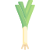
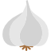

Après nos 2 saveurs sucrées: banane et chocolat-noisette, la team salée a aussi droit à sa saveur ! La saveur Légumes Verts est un véritable délice pour les sportifs de tous niveaux Grâce à son format nomade, les sportifs peuvent emporter leur shaker Feed. partout pour pratiquer le sport de leur choix Running le matin, musculation à midi ou fitness le soir, le temps accordé au repas ne sera plus une excuse pour se défiler ! COMPOSITION Sans sucre ajouté, la nouvelle recette Feed. contient 5,5 grammes de sucre, naturellement présents dans les ingrédients: farine d'avoine sans gluten protéine de pois farine de riz oignon grillé  poireau basilic  ail lin jaune Les avantages des repas FEED Sport : - 2 fois plus de protéines - 0 sucre ajouté pour des besoins spécifiques - 5,5 grammes de sucre par repas, naturellement présents dans les ingrédients - 33% des apports en vitamines et minéraux pour le bon fonctionnement du métabolisme et pour palier les pertes liées à la sudation. Que l’effort soit d’endurance (running, cyclisme, etc.), de force (musculation, crossfit, etc.), ou cardio (fitness, zumba, etc.), les muscles sont fortement sollicités. Les contractions successives créent des lésions au niveau des fibres musculaires. Leur régénération pendant la phase de récupération augmente d’autant les besoins en protéines. Dans sa gamme SPORT, Feed. vous apporte donc 2 fois plus de protéines (issues d’un mélange complet de protéines de légumineuse et de céréales pour un profil en acides aminés parfait) que dans sa gamme classique, soit 50g par repas. Cet apport adapté à la pratique sportive va optimiser la reconstruction musculaire et accélérer la récupération pour que vous profitiez au maximum de la séance suivante. Aussi les repas complets Feed. SPORT vous offrent 60g de glucides à indice glycémique très faible (0 sucre ajouté)qui vous fourniront satiété et énergie jusqu’au prochain repas et rendront ainsi les protéines totalement disponibles à la reconstruction musculaire. Plus d’excuses pour ne pas être les plus beaux sur la plage Pour la team sucrée: vous pouvez également découvrir nos 2 autres saveurs de la gamme sport: banane et chocolat-noisettes ! Notre équipe d’experts est à votre disposition pour répondre à toutes vos questions : hello@feed.co La Team Feed.